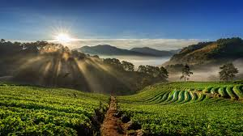
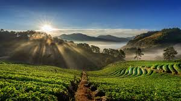

COORG
Located in the Western Ghats of Karnataka, Coorg (Kodagu) is a picturesque hill station known for its coffee plantations, misty hills, and rich culture. The region is often referred to as the Scotland of India due to its breathtaking landscapes and cool climate. Coorg is home to attractions like Abbey Falls, Raja's Seat, and Namdroling Monastery, the largest Tibetan settlement in South India. The best time to visit Coorg is from October to March, when the weather is cool and pleasant. Whether you're interested in trekking, exploring coffee estates, or simply soaking in the mesmerizing views, Coorg has something for every traveler!
Coorg is a haven for nature lovers and adventure enthusiasts. The Brahmagiri Hills and Tadiandamol Peak are popular spots for trekking, while the Dubare Elephant Camp offers a unique experience with elephants.
🌿 Coffee Plantations and Spice Gardens
Coorg is famous for its coffee plantations, which produce some of the finest coffee in India. Visitors can explore the coffee estates or take a stroll through the spice gardens, which house a variety of exotic spices.
🚶 Trekking and Adventure
Coorg offers numerous trekking trails, including the Brahmagiri Trek and Tadiandamol Trek, which provide stunning views of the Western Ghats.
🌺 Cultural Heritage
Coorg is known for its rich cultural heritage, including the Kodava culture and traditional festivals like Puthari and Kailpodh.
Find Location
 
